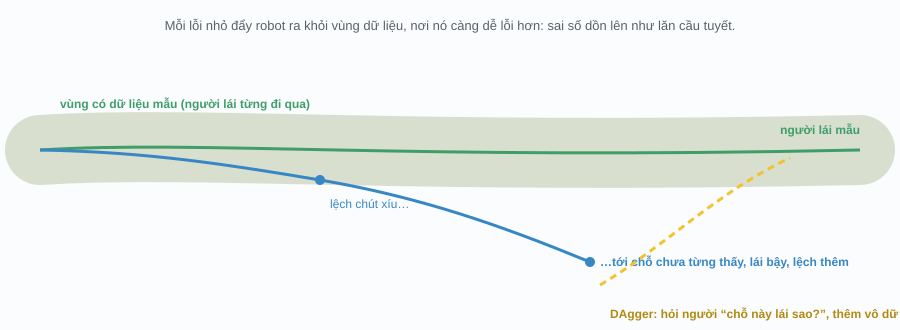
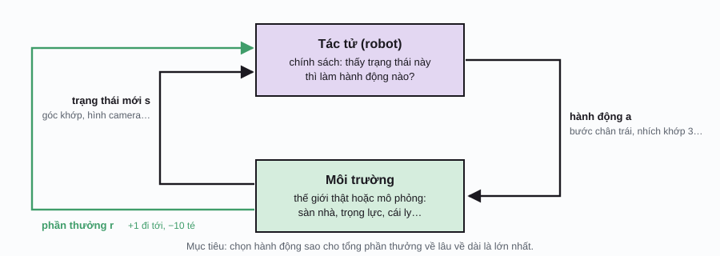
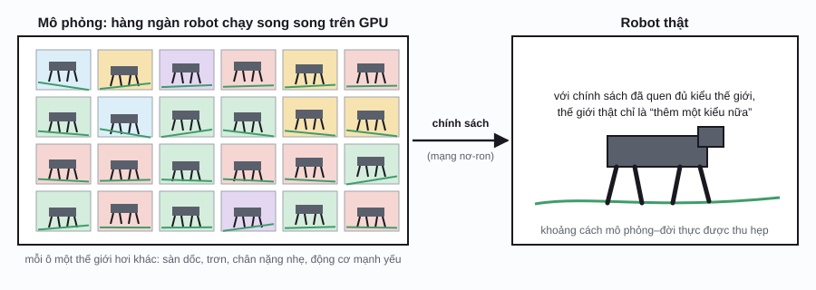

Robotics / Phần 5
Robot tự học
Bốn phần trước, mọi thứ đều do kỹ sư ngồi viết ra: công thức, luật điều khiển, thuật toán. Cách đó giỏi trong nhà máy ngăn nắp, nhưng bó tay với việc gấp cái áo hay đi trên đá sỏi. Trang này kể hai cách để robot tự học kỹ năng: học bằng cách coi người làm mẫu, và học bằng cách tự thử và sai.
Vì sao robot cần tự học?
Năm 1988, Hans Moravec để ý một chuyện ngộ: máy tính thắng người dễ dàng ở cờ vua hay tính toán, mà lại thua đứa nhỏ một tuổi ở chuyện cầm nắm, đi đứng, nhận ra đồ vật. Cái gọi là nghịch lý Moravec (Moravec’s paradox) này nói rằng những kỹ năng mình thấy “dễ” lại là những kỹ năng tiến hóa mài giũa hàng trăm triệu năm, nên tụi mình làm mà hổng biết mình làm ra sao, và vì vậy cũng hổng viết thành luật cho robot được.
Thử viết luật gấp áo coi: áo thun hay áo sơ mi, vải dày hay mỏng, đang nằm nhăn nhúm kiểu nào… Mỗi trường hợp một luật thì viết hoài hổng hết. Cách khác là để robot tự rút ra cách làm từ dữ liệu, y như mạng nơ-ron tự học nhận ra con mèo ở AI, Phần 1.
Học bắt chước
Cách tự nhiên nhất: người làm mẫu, robot coi rồi làm theo. Người ta thường cho người điều khiển robot từ xa (teleoperation), ví dụ cầm tay cầm điều khiển hay một cánh tay “con rối” cho robot cử động theo, rồi ghi lại từng cặp “robot thấy gì, người ra lệnh gì”. Học từ mấy cặp đó gọi là học bắt chước (imitation learning); cách đơn giản nhất của nó, nhân bản hành vi (behavior cloning), chính là bài học có giám sát quen thuộc: đầu vào là thứ robot thấy, đáp án là lệnh của người.
Nghe dễ, nhưng có một cái bẫy. Người lái giỏi thì hiếm khi lệch, nên dữ liệu toàn là cảnh “xe đang ngay ngắn giữa làn”. Robot học xong, chạy thật, lỡ lệch chút xíu là rơi vô cảnh chưa từng thấy, lái bậy, càng lệch thêm, càng lạ hơn. Sai số cứ dồn lên như lăn cầu tuyết.

Cách sửa của Stéphane Ross và cộng sự (2011) tên là DAgger (dataset aggregation): cho robot tự lái, ghi lại những chỗ nó đi qua (kể cả chỗ lệch), rồi nhờ người chuyên gia chấm “ở chỗ đó đáng lẽ phải lái sao”, thêm vô dữ liệu, học lại. Lặp vài vòng, dữ liệu phủ luôn những cảnh lệch, robot biết đường mà quay về.
Học bắt chước bị trôi, DAgger sửa
Robot học lái xe từ người lái mẫuNhững điều có thể kiểm tra trên minh họa:
- Bấm “Người lái mẫu chạy”: với gió ngang mức 1, người lái mẫu gần như hổng ra khỏi làn.
- Bấm “Robot bắt chước chạy” với cùng mức gió: một lần chạy thử của tui ra khỏi làn 24,5% thời gian và văng khỏi đường 5 lần. Nhìn ô dưới: vệt xanh đi xa khỏi cụm chấm xám, tức là robot đang ở chỗ nó chưa có dữ liệu.
- Bấm “DAgger: thêm 1 vòng sửa” ba lần: chấm vàng lấp dần những vùng lệch, và lần chạy cuối của tui chỉ còn 1,8% thời gian ra khỏi làn, hổng văng lần nào.
- Kéo gió về 0,15 (đúng như ngày quay dữ liệu mẫu) rồi cho robot bắt chước chạy: nó chạy ngon. Học bắt chước chỉ tốt trong những cảnh giống dữ liệu.
Học tăng cường: thử và sai
Còn những việc mà chính người cũng hổng làm mẫu được, như cho robot bốn chân chạy trên đá hay cánh tay xoay khối rubik bằng mấy ngón? Lúc đó mình chỉ nói cho robot biết cái gì là tốt, rồi để nó tự mò cách. Giống dạy chó: làm đúng thì cho bánh, làm sai thì hổng cho. Đó là học tăng cường (reinforcement learning, RL).

Robot (gọi là tác tử (agent)) thấy trạng thái (state), chọn một hành động (action), môi trường trả về trạng thái mới cùng một phần thưởng (reward). Cách chọn hành động theo trạng thái gọi là chính sách (policy). Cái khó: phần thưởng thường tới trễ. Cả trăm bước đi mới tới đích, vậy bước nào đáng khen? RL giải chuyện này bằng cách học giá trị của từng lựa chọn: “đứng ở đây mà làm cái này thì về lâu dài được bao nhiêu điểm”.
Q-learning
Thuật toán kinh điển của Chris Watkins (1989) giữ một bảng \(Q(s, a)\): giá trị của việc làm hành động a ở trạng thái s. Mỗi bước, robot so “điểm mình tưởng” với “điểm vừa nhận cộng giá trị chỗ mới tới”, rồi sửa bảng một chút theo chênh lệch đó:
s, a: trạng thái và hành động vừa làm; r: phần thưởng vừa nhận; s′: trạng thái mới; maxa′ Q(s′, a′): giá trị của lựa chọn tốt nhất ở chỗ mới; α (alpha): tốc độ học, sửa nhiều hay ít mỗi lần; γ (gamma): hệ số chiết khấu (discount factor), từ 0 tới 1, coi trọng điểm tương lai cỡ nào (một điểm sau 10 bước chỉ đáng γ10 điểm bây giờ). Phần trong ngoặc vuông là “mức bất ngờ”: thực tế tốt hơn tưởng thì tăng Q, tệ hơn thì giảm.
Còn một câu hỏi: lúc học, robot nên làm cái nó cho là tốt nhất, hay thử cái mới? Chỉ làm cái quen thì có khi bỏ lỡ đường tốt hơn; thử hoài thì phí công. Đây là thế giằng co giữa khám phá và khai thác (exploration vs. exploitation). Cách đơn giản: phần lớn thời gian chọn cái tốt nhất, thỉnh thoảng (tỉ lệ ε, đọc là epsilon) chọn bừa.
Q-learning trong mê cung
Robot tự mò đường bằng thử và saiNhững điều có thể kiểm tra trên minh họa:
- Bấm “Chạy” với tốc độ thấp: lượt đầu robot đi lòng vòng mấy trăm bước. Lúc chạm được đích, chỉ một ô kế đích có giá trị. Lượt sau, giá trị lan ngược thêm một ô, rồi thêm ô nữa: màu xanh loang dần từ đích về điểm đầu.
- Bấm “Học nhanh 300 lượt”: mũi tên chỉ thành một đường đi về đích. Đồ thị bên dưới cho thấy số bước mỗi lượt tụt từ cả trăm xuống cỡ hai chục.
- Đường ngắn nhất trong mê cung này dài 19 bước. Với ε = 0,1, robot thường đi 19 tới hơn 20 bước, và thỉnh thoảng té vũng nước vì bước “thử bậy” rơi đúng lúc đứng kế vũng. Kéo ε về 0 rồi học nhanh thêm: tui thấy robot đi đúng 19 bước.
- Bật “Sàn trơn”, bấm “Quên hết” rồi học lại: coi thử đường đi mới có chịu tránh xa mấy vũng nước hơn hông. Thêm rủi ro thì đường “an toàn” có khi đáng hơn đường ngắn nhất.
Mê cung này chỉ có 70 ô × 4 hướng, nên bảng Q nhỏ xíu. Robot thật thì trạng thái là hình camera và góc khớp, nhiều vô kể. Khi đó người ta thay bảng bằng một mạng nơ-ron, gọi là học tăng cường sâu (deep reinforcement learning): năm 2015, mạng DQN của DeepMind tự học chơi game Atari từ điểm ảnh màn hình. Với robot, các thuật toán như PPO cập nhật thẳng chính sách thay vì bảng giá trị, rất hợp với lệnh điều khiển liên tục như góc khớp.
Mô phỏng rồi chuyển qua đời thật
RL có một cái tật lớn: nó cần rất nhiều lần thử. Mê cung trên cần vài trăm lượt; một robot bốn chân học đi cần cỡ hàng chục triệu bước. Làm vậy trên robot thật thì hư robot, hết pin, và tốn cả năm. Giải pháp là cho robot tập trong mô phỏng: một thế giới ảo có trọng lực, ma sát, va chạm, chạy nhanh hơn thời gian thật cả ngàn lần, với hàng ngàn robot ảo tập cùng lúc trên một card đồ họa. Năm 2021, nhóm ở ETH Zürich và NVIDIA cho thấy robot bốn chân có thể học đi trên địa hình gồ ghề chỉ sau cỡ hai chục phút huấn luyện kiểu này.
Cái khó là khoảng cách mô phỏng–đời thực (sim-to-real gap): mô phỏng hổng bao giờ giống hệt đời thật. Sàn thật trơn hơn, động cơ thật yếu hơn, camera thật bị chói. Chính sách học thuộc lòng thế giới ảo thì ra đời thật dễ té. Mẹo phổ biến nhất là ngẫu nhiên hóa miền (domain randomization): mỗi robot ảo tập trong một thế giới hơi khác, ma sát, khối lượng, độ trễ, màu sắc đều xáo ngẫu nhiên. Chính sách quen đủ kiểu thế giới thì gặp thế giới thật cũng chỉ là “thêm một kiểu nữa”.

Cẩn thận với điều ước
RL làm đúng y cái mình thưởng, chứ hổng phải cái mình muốn. Năm 2016, OpenAI kể chuyện một tác tử chơi game đua thuyền CoastRunners: thay vì về đích, nó học cách chạy vòng vòng trong một cái vũng để ăn đi ăn lại mấy món tiền thưởng, điểm còn cao hơn người chơi về đích. Hiện tượng này gọi là lách luật phần thưởng (reward hacking).
Với robot, chuyện này xảy ra hoài: thưởng “đi tới nhanh” thì robot có khi học cách lăn lộn hay nhảy cà giựt cho lẹ, chứ hổng đi đàng hoàng. Kỹ sư phải thêm điểm phạt cho rung lắc, cho tốn điện, cho chân trượt… Thiết kế phần thưởng là cả một nghề, và là lý do nhiều nhóm thích học bắt chước hơn: “làm giống người” dễ tả hơn nhiều so với “làm tốt”.
| Tiêu chí | Viết luật bằng tay | Học bắt chước | Học tăng cường |
|---|---|---|---|
| Người phải cung cấp | Công thức, thuật toán | Làm mẫu (vài chục tới vài ngàn lần) | Hàm phần thưởng và môi trường để thử |
| Giỏi nhất khi | Môi trường ngăn nắp, hiểu rõ vật lý | Việc khéo tay mà người làm được | Việc người hổng làm mẫu được (chạy, nhảy, giữ thăng bằng) |
| Điểm yếu | Hổng chịu nổi đời thực lộn xộn | Sai số dồn dần; hổng giỏi hơn thầy | Cần cả triệu lần thử; dễ lách luật phần thưởng |
Từ điển nhỏ
| Thuật ngữ | Tiếng Anh | Nói đơn giản |
|---|---|---|
| Nghịch lý Moravec | Moravec’s paradox | Việc dễ với người (cầm nắm, đi) lại khó nhất với máy. |
| Điều khiển từ xa | teleoperation | Người điều khiển robot qua tay cầm hay cánh tay con rối. |
| Học bắt chước | imitation learning | Học từ các lần người làm mẫu. |
| Nhân bản hành vi | behavior cloning | Học có giám sát: thấy gì thì làm y như người. |
| DAgger | dataset aggregation | Robot tự làm, người chấm lại chỗ sai, gộp vô dữ liệu, học lại. |
| Học tăng cường | reinforcement learning (RL) | Học bằng thử và sai theo phần thưởng. |
| Tác tử | agent | Kẻ học và hành động (robot). |
| Chính sách | policy | Quy tắc chọn hành động theo trạng thái. |
| Phần thưởng | reward | Điểm cộng trừ môi trường trả về sau mỗi bước. |
| Hệ số chiết khấu | discount factor | Điểm tương lai đáng bao nhiêu so với điểm bây giờ. |
| Khám phá và khai thác | exploration vs. exploitation | Thử cái mới hay làm cái đã biết là tốt. |
| Khoảng cách mô phỏng–đời thực | sim-to-real gap | Chỗ khác nhau giữa thế giới ảo và thế giới thật. |
| Ngẫu nhiên hóa miền | domain randomization | Tập trong nhiều thế giới ảo hơi khác nhau để quen với đời thật. |
| Lách luật phần thưởng | reward hacking | Ăn điểm bằng cách mình hổng ngờ tới, hổng làm đúng việc. |
Phụ lục: ký hiệu toán học
Ký hiệu toán học trên trang này. Cột giữa là cách đọc trong tài liệu tiếng Anh.
| Ký hiệu | Đọc (tiếng Anh) | Ý nghĩa, nói đơn giản |
|---|---|---|
| \(s,\ s'\) | s, s prime | Trạng thái hiện tại và trạng thái kế tiếp. |
| \(a\) | a | Hành động. |
| \(r\) | r | Phần thưởng. |
| \(Q(s,a)\) | Q of s a | Giá trị về lâu dài của việc làm a ở s. |
| \(\max_{a'}\) | max over a prime | Lấy giá trị lớn nhất khi thử mọi hành động a′. |
| \(\alpha\) | alpha | Tốc độ học. |
| \(\gamma\) | gamma | Hệ số chiết khấu, từ 0 tới 1. |
| \(\varepsilon\) | epsilon | Tỉ lệ chọn bừa để khám phá. |
Lịch sử
- 1957
Quy hoạch động
Richard Bellman đưa ra phương trình mang tên ông: giá trị của một trạng thái bằng phần thưởng trước mắt cộng giá trị của trạng thái kế tiếp. Q-learning là cách học phương trình này từ kinh nghiệm.
- 1989
ALVINN và Q-learning
Dean Pomerleau (Carnegie Mellon) cho một mạng nơ-ron nhỏ học lái xe Navlab bằng cách coi người lái, một trong những lần học bắt chước đầu tiên. Cùng năm, Chris Watkins giới thiệu Q-learning trong luận án tiến sĩ.
- 1992
TD-Gammon
Gerald Tesauro (IBM) cho chương trình tự chơi cờ tào cáo với chính nó và học tới trình độ cao thủ.
- 2011
DAgger
Ross, Gordon và Bagnell chỉ ra vì sao học bắt chước bị sai số dồn dần, và cách sửa bằng gộp dữ liệu.
- 2015–16
DQN và AlphaGo
DeepMind cho mạng DQN tự học chơi hàng chục game Atari từ điểm ảnh, rồi AlphaGo thắng kỳ thủ cờ vây Lee Sedol, mở màn thời đại học tăng cường sâu.
- 2017–19
Từ mô phỏng ra đời thật
Tobin và cộng sự đề xuất ngẫu nhiên hóa miền; năm 2019 bàn tay robot của OpenAI xoay khối rubik nhờ tập hoàn toàn trong mô phỏng.
- 2021
Học đi trong vài phút
Rudin và cộng sự (ETH Zürich, NVIDIA) huấn luyện hàng ngàn robot bốn chân ảo song song trên một GPU, cho ra chính sách đi trên địa hình gồ ghề chỉ sau cỡ hai chục phút.
- 2023
Học bắt chước hồi sinh
Hệ ALOHA điều khiển từ xa giá rẻ và mô hình “diffusion policy” giúp robot học việc khéo tay chỉ từ vài chục tới vài trăm lần làm mẫu.
Tài liệu tham khảo
- R. S. Sutton, A. G. Barto, Reinforcement Learning: An Introduction, 2nd ed., MIT Press, 2018 (bản điện tử miễn phí trên trang của tác giả).
- S. Ross, G. Gordon, D. Bagnell, “A Reduction of Imitation Learning and Structured Prediction to No-Regret Online Learning”, AISTATS 2011.
- C. J. C. H. Watkins, P. Dayan, “Q-learning”, Machine Learning 8, 1992.
- V. Mnih et al., “Human-level Control through Deep Reinforcement Learning”, Nature 518, 2015.
- N. Rudin, D. Hoeller, P. Reist, M. Hutter, “Learning to Walk in Minutes Using Massively Parallel Deep Reinforcement Learning”, CoRL 2021. arXiv:2109.11978.
- OpenAI et al., “Solving Rubik’s Cube with a Robot Hand”, 2019. arXiv:1910.07113.
- T. Z. Zhao, V. Kumar, S. Levine, C. Finn, “Learning Fine-Grained Bimanual Manipulation with Low-Cost Hardware” (ALOHA), RSS 2023. arXiv:2304.13705.
- C. Chi et al., “Diffusion Policy: Visuomotor Policy Learning via Action Diffusion”, RSS 2023. arXiv:2303.04137.